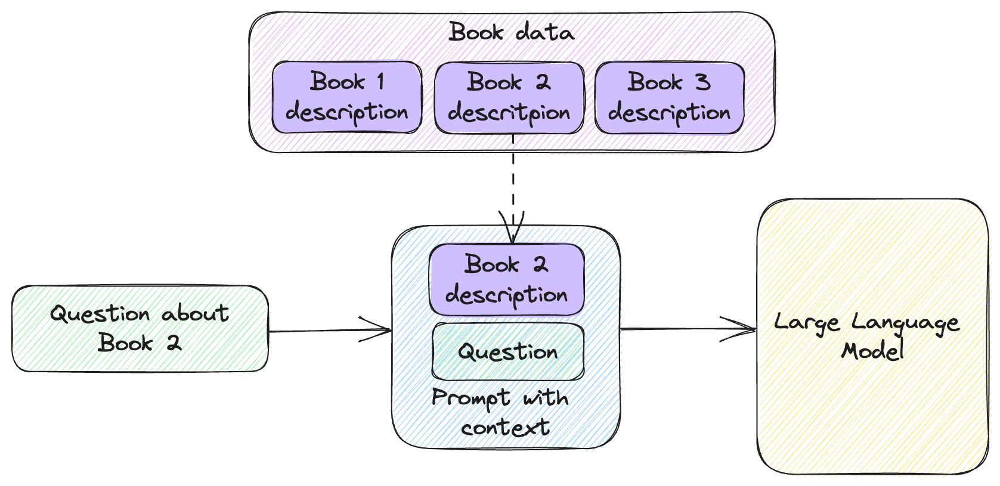

Memory and Embeddings

In this chapter:
- Implementing simple memories.
- Leveraging embeddings for better recall.
- Using a vector database.
- Exploring alternative memory architectures.
We saw some important limitations of large language models: the fact that they don’t maintain any memory between API calls and token limits which make it impossible to add large amounts of data in a prompt. The solution to these limitations is memory – having some other storage for data and a mechanism to retrieve the bits relevant to the current prompt.
We’ll start with a couple of simple memory implementations. First, we’ll look at maintaining a chat memory as a list of messages. As we start running into token limits, we’ll start popping old messages from the list. This is a very primitive solution, which introduces the problem space.
We’ll then implement a slightly smarter key-value memory. Our memory will consist of book descriptions keyed by book title. When our prompt mentions a book title we know about, we inject the book data into the prompt. We’ll also cover limitations of this approach.
Next, we’ll look at a better approach: embeddings. We’ll see what an embedding is and how we can produce one. We’ll implement a memory based on embeddings, which makes data retrieval much better. We’ll revisit the Pod Racing dataset and Q&A scenario. Instead of the fine-tuning we used in chapter 4, we’ll embed the dataset and implement Q&A using embeddings. Turns out this yields better results than fine-tuning.
To scale to large datasets, we’ll likely need a vector database. We’ll take a look at Chroma, an open-source vector database. We’ll redo the Pod Racing Q&A using Chroma and learn how we can store and query embeddings. We’ll briefly talk about other vector databases which you should consider when building your solution.
We’ll wrap up with a quick overview of a novel approach to memory, which expands on embeddings with additional parameters like recency and importance. This is an interesting area of exploration. But first things first: a very simple memory implementation.
A simple memory
We’ll start our discussion on memory by reiterating the need for such a mechanism and the limitations of a naïve approach. We saw in chapter 2 that large language models do not maintain any memory themselves. At the model layer, there is no concept of session or chat. Let’s say we implement a simple chat client that doesn’t have any memory whatsoever, like we did in chapter 3 (listing 3.24). We’ll reproduce it here as listing 5.1.
from llm_utils import ChatTemplate
chat = ChatTemplate(
{'messages': [{'role': 'system', 'content': 'You are an AI chat program.'},
{'role': 'user', 'content': '{{prompt}}'}]})
while True:
prompt = input('user: ')
if prompt == 'exit':
break
message = chat.completion({'prompt': prompt}).choices[0].message
print(f'{message.role}: {message.content}')
Listing 5.1: Command line chat without history.
Note we are looping, sending prompts to the large language model, and printing the replies, but we don’t maintain any history of the chat.
If we run this and our first prompt is Say Hello world
in Python and our
second one is Now do it in Ruby, we will get a response similar to listing
5.2.
user: Say "Hello world" in Python
assistant: Sure, here is how to say "Hello world" in Python:
```
print("Hello world")
```
user: Now do it in Ruby
assistant: Sure I can do that! Here's a simple Ruby program that can be run in the console:
```
class ChatProgram
def initialize
puts "Hello! I'm a chat program. What's your name?"
@name = gets.chomp
end
...
Listing 5.2: Chatting with a large language model without history.
I trimmed a lot of the output in listing 5.2 as the response went on for quite a
while but this should be enough to get the point across. This example simply
illustrates the fact that models by themselves don’t remember anything between
prompts, which makes for some very incoherent “chat”. The model did not remember
our first prompt was Say "Hello world" in Python, so it interpreted Now do it
in Ruby as a standalone ask, and it tried to guess what we mean by “it”. In
this case it implemented a chat program.
The solution we saw before, reproduced in listing 5.3, is to maintain a history of the prompts and responses, and send it back to the model with each prompt.
from llm_utils import ChatTemplate
chat = ChatTemplate(
{'messages': [{'role': 'system', 'content': 'You are an AI chat program.'}]})
while True:
prompt = input('user: ')
if prompt == 'exit':
break
chat.template['messages'].append({'role': 'user', 'content': prompt})
message = chat.completion({}).choices[0].message
print(f'{message.role}: {message.content}')
chat.template['messages'].append(
{'role': message.role, 'content': message.content})
Listing 5.3: Chat with history.
Unlike listing 5.1, here we append the user message to
chat.template['messages'] before sending the request to the large language
model. We also append the response we get from the model after printing it. With
each iteration of the loop, we now maintain a history of the conversation which
we play back with each request.
With this approach, our previous example of saying “Hello world” in different languages looks a lot better (listing 5.4).
user: Say "Hello world" in Python
assistant: Hello world! Here's the code to print it in Python:
```
print("Hello world")
```
user: Now do it in Ruby
assistant: Sure! Here's how to print "Hello world" in Ruby:
```
puts "Hello world"
```
Listing 5.4: Chatting with a large language model with history.
Figure 5.1 shows how this works.

Figure 5.1: Maintaining a history of all messages in a chat.
- We append the latest user input to the list of messages.
- We send the whole list of messages to the large language model.
- We append the response we get from the model to the list of messages.
So far so good – our chat history acts as a very simple memory for the model. The reason we have to dedicate a whole chapter to the topic is we can easily run into token limits. As the chat conversation continues, our history grows unbounded. At some point, it grows large enough that the model is no longer able to process it.
You can give this a try if you want to see how it looks like. Here is what happens once the prompt becomes too large for the model:
openai.error.InvalidRequestError: This model's maximum context length is 4097 tokens. However, your messages resulted in 4327 tokens. Please reduce the length of the messages.
The API throws an exception. This means our chat program as-is won’t work very well for any significantly long chat conversation.
Keep in mind this goes beyond chat applications. In chapter 4 we saw how we can use few-shot learning to “teach” the model new things. For any complex enough scenario, we will have enough data at hand that we won’t be able (and it would be highly inefficient) to send all of it to the model with each prompt. Think of a scenario like our Pod Racing stats from chapter 4. For a large enough dataset, we had to resort to fine-tuning, but also discussed some of the tradeoffs with this approach. We said there is an alternative to make large datasets available to a large language model through memory. Throughout the rest of this chapter, we’ll look at different ways to implement memory.
In chapter 2 we touched on tiktoken, an OpenAI Python library we can use to
count the number of tokens in a request. Counting tokens becomes relevant as
we’re looking at scenarios like the chat memory above, where we are likely to
run into limits. Counting tokens with tiktoken is straight-forward for
completion model but gets a bit more complex for chat completion models, where
we have multiple roles and messages. The implementation itself is less
interesting. Our llm_utils library as count_tokens(), which works for
counting the tokens in the messages parameter of the current version of
gpt-3.5-turbo (future iterations of this model might choose a different
encoding). We’ll be using this function in the next code samples without
discussing the implementation here (it is covered in Appendix A if you are
curious).
Note the large language model token limit is a combination of prompt and response, so we need our prompt to leave enough tokens for the model response too. One idea for the chat scenario is to set some token limit we want our prompt to fit into, with enough tokens left for a response, and forget old chat items. Figure 5.2 sketches how this would work.

Figure 5.2: Chat history with limit.
- Same as figure 5.1, we append the user input to the list of messages.
- We now check whether we are within the token limit. If we are not, we remove the oldest message. Repeat until we are within the limit.
- Send all of the remaining messages to the large language model.
- Append the response to the list of messages.
Listing 5.5 shows the implementation.
from llm_utils import ChatTemplate, count_tokens
chat = ChatTemplate(
{'messages': [{'role': 'system', 'content': 'You are an AI chat program.'}]})
TOKEN_LIMIT = 1000
while True:
prompt = input('user: ')
if prompt == 'exit':
break
chat.template['messages'].append({'role': 'user', 'content': prompt})
while count_tokens(chat.template['messages']) > TOKEN_LIMIT:
chat.template['messages'].pop(0)
message = chat.completion({}).choices[0].message
print(f'{message.role}: {message.content}')
chat.template['messages'].append(
{'role': message.role, 'content': message.content})
Listing 5.5: Chat with history and token limit.
We set a token limit of 1000 and while our history of the chat (maintained in
chat.template['messages']) has more tokens that the limit, we pop the oldest
item.
This is a pretty simple “memory” which will never run into token limits. We can have a conversation where we reference previous prompts and it will work up to a point. As the chat history starts hitting token limits, we start removing items from it, so if further down the chat we try to reference something from the very beginning, the model will no longer be able to recall that. This might be good enough for some scenarios, but we can do much better.
Key-value memory
A key-value memory is another pretty simple type of memory, which works well in certain scenarios. For example, let’s say we have a database of books and information about each book. We can represent these as book title-book description key-value pairs. Listing 5.6 shows a small example, though our dataset can be arbitrarily large.
Travelling at Night
---
The annotated dream-journals of Christopher Illopoly, sometimes called 'the only
readable occultist': literate, entertaining, bewildering.
'The Wood lies outside the walls of the Mansus. As any student of Histories
knows, the Mansus has no walls.'Illopoly describes how he came to make repeated
visits to a dream-Wood via what he calls silver dreams. 'Trying to think your
way to the Wood,' he explains, 'is like thinking your way to being in love. But
I did find a Secret that helped.'
The Skeleton Songs
---
Poems of greedy delight composed by the possibly pseudonymous Arabella Dusk, the
rumoured heiress-turned-madam-turned-poetess. In Arabella's introduction, she
explains that the book was to be illustrated, but that the Suppression Bureau
would not permit it. She hints that the illustrations still exist somewhere. The
book is dedicated to 'Sir Parsival of the Red Cup'. The Twenty-Six Delightful
Fruits; the Seven Chastisements; the Nine Gardens; the Four Regrets.
The Locksmith's Dream
---
The first volume of Teresa Galmier's examination of parallels in the mystic
dreams of artisans.The parallels in mystic dreams experienced by carpenters,
masons and other artisans, and what they purport to reveal about the
architecture of the world. Sometimes mordant, sometimes funny. No-one has ever
explained why Galmier devoted herself to this quixotic exploration of artisan's
dreams. 'Time and again we hear of the Wood, which rises from the world's
foundation. All trees reach for light. What does the Wood reach for? Is there a
difference between light and Light? I think the key to dreams of the Wood might
be one of these - the one that isn't exactly real.'
Listing 5.6: Book titles and descriptions.1
We can save this file as books.txt. We can now load this database in a
dictionary and enhance our chat program so it can answer questions about books.
Figure 5.3 shows how this would work.

Figure 5.3: Retrieving book description from memory based on question.
As we chat with our user, we check whether a book title is mentioned in their prompt. If it is, we retrieve the book description from memory and inject it in the prompt before sending it over to the large language model. This adds additional context to the prompt. We used the term “context” in previous chapters but let’s define it here.
Definition: prompt context refers to the input provided to the model to guide its response. It includes the user ask and additional information relevant for satisfying the ask. The information could be a history of previous interactions, additional data, additional instructions, example responses etc.
Listing 5.7 shows the implementation.
from llm_utils import ChatTemplate
with open('books.txt', 'r') as f:
content = f.read().split('\n\n')
books = {}
for book in content:
title, description = book.split('\n---\n')
books[title] = description.strip()
chat = ChatTemplate(
{'messages': [{'role': 'system', 'content': 'You are an AI chat program.'}]})
while True:
prompt = input('user: ')
if prompt == 'exit':
break
for book in books:
if book in prompt:
chat.template['messages'].append({'role': 'user', 'content':
'Here is a description of ' + book + ': ' + books[book] + '.'})
chat.template['messages'].append({'role': 'user', 'content': prompt})
message = chat.completion({}).choices[0].message
print(f'{message.role}: {message.content}')
chat.template['messages'].append(
{'role': message.role, 'content': message.content})
Listing 5.7: Adding book context to chat.
We read book.txt and process it into the books dictionary as
title-description key-value pairs. In our chat loop we now preprocess the
prompt, identify the information that will most likely give useful additional
context to the large language model and update the prompt with this information.
Namely we search for book titles in the user’s prompt. If we find one, we
inject another message into the chat history before the user prompt. This
message provides the description of a book as retrieved from our key-value
memory (the books dictionary).
Listing 5.8 shows a possible dialogue using this implementation.
user: Who is the author of The Skeleton Songs?
assistant: The author of The Skeleton Songs is Arabella Dusk, a possibly
pseudonymous poetess.
Listing 5.8: Dialogue with key-value memory.
Listing 5.7 shows a small implementation optimized for readability. A few things to note here:
- If the user mentions the same book in two different prompts, we inject the same description twice in the chat. We can extend the code to keep track of which descriptions we already provided and avoid duplication. Better yet, we can trim the chat history of book descriptions that are not relevant to the current user prompt.
- We can mix the simple memory with token limits we looked at in the previous section with this implementation. We are again at a point where a long chat will exhaust the token limit, but there’s nothing preventing us from trimming the history to avoid this.
- We can provide smarter search than exact string matching. For example, we can do fuzzy matching to account for typos.
We didn’t do any of the above to keep the code sample easier to read, but all of these are valid enhancements which we’d likely do if we were building a robust system.
This is the first time where we can easily see how useful additional memory is. While our example shows only a few books, in practice we can have as many as we want. We have the constraint of one book description having to fit within the token limit, but not the total size of all book descriptions.
Memory
We’ve seen a couple of memories, so let’s extrapolate and look at the generic structure. Figure 5.4 shows a pipeline including memory.

Figure 5.4: Large language model pipeline with memory.
We have a large dataset (larger than we can fit in a prompt) – our memory. We take some input. Based on the input, we identify which pieces of our large dataset apply to the input, and we pull them into the prompt we send to the large language model.
In general, since large language models don’t remember data that they haven’t been trained on, we can greatly increase their utility by providing external memory. This is very much analogous with how a computer system works – the large language model is like a CPU, and the memory implementations we’re covering in this chapter are like RAM.
Key-value memory works for some scenarios, but a big limitation with this approach is figuring out which keys are relevant to the user ask. In our book example, we simply searched for a book title in the prompt. This runs into limitations very fast – what if the user only remembers the name of a character and asks in which book the character shows up? Since our key-value memory is keyed by book title, we won’t know which book description to retrieve. Language models are great at language processing, and it turns out there already is a solution perfect for this use-case: embeddings.
Embeddings
Before we implement a memory based on embeddings, let’s understand what an embedding is. The next section will be a bit more theoretical, but it’s important to grasp the concept.
What are embeddings
Underneath all machine learning, there’s large arrays of numbers. That’s how neural networks represent inputs and weights. Large language models deal with text, so there needs to be some mapping of language to numbers. We would also expect some notion of similarity – the numerical representation of synonyms should be numbers close in value. Large language models encode semantic meaning through this closeness of values.
To develop an intuitive understanding of this, let’s start by imagining a single dimension – meaning we associate a single number to a word. We would expect the distance between the word cat and the word dog to be smaller than the distance between the word cat and the word helicopter. If we plot these on a line, the points representing cat and dog would be closer together, and the word helicopter would be further away. That’s because cats and dogs are pets and are likely to come up in similar contexts together than next to aircrafts.
Of course, a single dimension is not enough to express how closely related words are. Kitten should be as close to cat as puppy would be to dog. And since kitten is to puppy what cat is to dog, the distance between kitten and puppy should be similar to the distance between cat and dog. All still relatively far away from helicopter. Let’s add a second dimension and plot these points, as in figure 5.5.

Figure 5.5: Word relationships represented in a 2-dimensional space.
While harder to visualize, large language models represent words as vectors (lists) of numbers. This would be our pets and helicopter example above but extended to a much larger number of dimensions.
Definition: Word embeddings are numerical representations of words that capture their meanings and relationships based on how they appear in a text corpus. These embeddings are generated by training a machine learning model on a large amount of text data. The model learns to assign each word a unique vector of numbers, which serves as its embedding.
The values used to represent a word like cat are determined during model training. It’s very likely that cats and dogs show up together more often than cats and helicopters, so the model will capture this relationship by keeping the words closer together.
We call these representations “embeddings” because the model takes a word and embeds it into a vector space. Embedding is not limited to single words only – sequences of text can also be embedded, capturing their meaning in the same vector space.
OpenAI offers a set of models that output embeddings. The latest,
text-embedding-ada-002, performs best and is cheapest ($0.0004 per 1000
tokens2), so that’s the one we’ll be using in this chapter.
The embedding API is simpler than the completion APIs. It has 3 parameters:
model– The model we want to use for the embedding, in our case this will betext-embedding-ada-002.input– A string or array of tokens – the text for which we want the embedding.user– An end user ID. This is an optional parameter we can pass in to help OpenAI detect abuse. More on this in chapter 8, when we discuss safety and security. In short, imagine we offer a Q&A application, but a user starts asking inappropriate questions. These would get passed through our code to the OpenAI API. If OpenAI detects abuse, it can be tied to a user ID and help us identify the abuser.
Listing 5.9 implements a get_embedding() function.
import openai
def get_embedding(text):
return openai.Embedding.create(
input=[text.replace('\n', ' ')],
model='text-embedding-ada-002')['data'][0]['embedding']
Listing 5.9: Function to create an embedding.
We use the openai library to call the Embedding.create() function. We
replace newlines with spaces in the input text and omit the optional user
parameter. We won’t cover the full response shape we get from the model. The
embedding property of the first item in the returned data array contains our
embedding. This function is available in the llm_utils library.
Listing 5.10 calls this function to get the embedding for the word cat.
from llm_utils import get_embedding
print(get_embedding('cat'))
Listing 5.10: Embedding of the word “cat”.
If you run this code, you will get a long list of numbers.
We talked about relationships being captured in embeddings and how words that are more closely related are closer together in the vector space. But we haven’t talked about how we measure distance.
There are several formulas to do this. OpenAI recommends using cosine similarity3 to measure the distance between two embeddings (i.e., two lists of numbers).
Sidebar: Cosine similarity and cosine distance
For vectors
AandB, the cosine similarity is:\(\cos(\theta)=\frac{AB}{\left\|A\right\|\left\|B\right\|}=\frac{\sum_{i=1}^{n}A_iB_i}{\sqrt{\sum_{i=1}^{n}A_i^2}\sqrt{\sum_{i=1}^{n}B_i^2}}\)
If you haven’t done math in a while the formula might look scary but it isn’t: the top of the fraction is the dot product of vectors
AandB, which simply means multiplying the first element ofAwith the first element ofB, the second element ofAwith the second element ofBand so on, and finally adding up all these products.At the bottom of the fraction, we multiply the length of the two vectors. To compute the length of vector
A, we square each of the elements, sum the result, then get the square root of that. We multiply the length ofAwith the length ofB.Cosine similarity is the cosine of the angle between the vectors. The closer the vectors, the closer this value will be to 1. The less they have in common, the closer they are to 0.
Cosine distance is
1 – cosine similarity. Since we want a measure of distance, we subtract the similarity from 1. The closer the vectors, the closer the distance gets to 0 and vice-versa, the further apart the vectors, the closer the distance gets to 1.
Listing 5.11 shows the implementation of cosine distance.
def cosine_distance(a, b):
return 1 - sum([a_i * b_i for a_i, b_i in zip(a, b)]) / (
sum([a_i ** 2 for a_i in a]) ** 0.5 * sum([b_i ** 2 for b_i in b]) ** 0.5)
Listing 5.11: Cosine distance.
As described in the sidebar, the first sum is iterating over pairs of elements
from a and b and multiplying them together. This is divided by the sum of
the squares of all the elements in a raised to the 1/2 power (square root)
times the sum of the squares of all the elements in b raised to the 1/2 power.
All of this subtracted from 1. This function is also available in the
llm_utils library.
Cosine distance is not the only way of determining how close two embeddings are. Euclidean distance4 is another common option. Though for vectors normalized to be in the [0, 1] range, like the OpenAI embeddings, cosine distance and Euclidean distance are the same.
With the math out of the way, let’s see why this is so important.
Memory based on embeddings
Remember, the key challenge with our key-value memory was identifying which data we should add to the prompt. In our book Q&A example, we searched for book titles in the user input and pulled in the information based on what we found. But we saw this breaks down fast if, for example, the user is asking about a character but doesn’t know which book the character shows up in.
This is where embeddings become very useful. Instead of relying on a book title or some other indexing schema, we compute the embedding of each chunk of data we have. When the user provides some input, we compute the embedding of the input. We then use the cosine distance to see which of our pieces of data is close to what the user is asking and pull that data into the prompt.
Let’s redo our Pod Racing example from chapter 4. Instead of fine-tuning a model to implement Q&A, we’ll use a memory based on embeddings.
First, we’ll get the embedding vectors for each of our text files, and store
these in a JSON file as pairs of file path: embedding. Listing 5.12 shows how
to do this.
from llm_utils import get_embedding
import json
import os
embeddings = {}
for f in os.listdir('../racing'):
path = os.path.join('../racing', f)
with open(path, 'r') as f:
text = f.read()
embeddings[path] = get_embedding(text)
with open('embeddings.json', 'w+') as f:
json.dump(embeddings, f)
Listing 5.12: Embedding the Pod Racing dataset.
We read each text file in our Pod Racing dataset (league.txt, race1.txt,
race2.txt, race3.txt, race4.txt and race5.txt). We call
get_embedding() to produce the embedding of the text, then store this in a
dictionary keyed by the file path. Finally, we save the dictionary as
embeddings.json.
Now let’s see how our Q&A solution works. Listing 5.13 implements the Q&A chat with embeddings. To keep things simple, we use a chat without memory. That means we won’t be able to ask the large language model follow up questions.
from llm_utils import ChatTemplate, get_embedding, cosine_distance
import json
embeddings = json.load(open('embeddings.json', 'r'))
def nearest_embedding(embedding):
nearest, nearest_distance = None, 1
for path, embedding2 in embeddings.items():
distance = cosine_distance(embedding, embedding2)
if distance < nearest_distance:
nearest, nearest_distance = path, distance
return nearest
chat = ChatTemplate(
{'messages': [{'role': 'system', 'content': 'You are a Q&A AI.'},
{'role': 'system', 'content': 'Here are some facts that can help you answer the following question: {{data}}'},
{'role': 'user', 'content': '{{prompt}}'}]})
while True:
prompt = input('user: ')
if prompt == 'exit':
break
context = nearest_embedding(get_embedding(prompt))
data = open(context, 'r').read()
message = chat.completion(
{'data': data, 'prompt': prompt}).choices[0].message
print(f'{message.role}: {message.content}')
Listing 5.13: Pod Racing Q&A using embeddings.
First, we load the embeddings we got with listing 5.12 from embeddings.json.
We then implement a nearest_embedding() function which, given an embedding,
iterates over the embeddings in our dataset and returns the nearest key. In this
case, the key is the path to the file.
Our chat template has two parameters: data and prompt. data is information
we retrieve from memory. prompt is the user question.
Putting it all together, we take an input question from the user as prompt, we
call get_embedding() to get the embedding of the question, and find the
nearest embedding in our memory. That is the data that’s most closely related to
the question. nearest_embedding() gives us the path to the file, so we open
the file and read it into data.
Finally, we prompt the large language model, providing the relevant data and user question. We print the response.
Listing 5.14 shows an example interaction.
user: What happened to Senn Kava during the Genosis Challenge?
assistant: During the Genosis Challenge Pod Racing race, Senn Kava encountered
an unexpected technical glitch during a crucial stage of the race. A malfunction
in the pod's stabilization system caused Kava to lose control momentarily,
resulting in a brief deviation from the racing line. Despite this setback,
Kava's skillful recovery and determination enabled them to regain momentum and
finish in third place.
user: In which race did a pilot find an uncharted shortcut?
assistant: Kael Voss, the pilot of the Razor Blade, found an uncharted shortcut
during the Coruscant Circuit Pod Racing race. He veered off the traditional
track, navigating through a perilous maze of lower city alleys and weaving
through oncoming traffic in an attempt to gain an advantage over the other
racers.
Listing 5.14: Example Q&A interaction.
Note we get correct answers to the questions, based on the facts in our text files, even though we decide which facts to add to the prompt at runtime based on the question.
For example, for the second question in listing 5.14 (in which race did a pilot
find an uncharted shortcut?), the content of race2.txt was passed in as
data to the prompt. That’s the only file that contains the information the
model needed to produce the response.
This is the key takeaway for why we want to use embeddings: the second question
didn’t mention either a pilot or a race, so it would’ve gotten complicated if we
wanted to devise some other mechanism to retrieve the right data. But using
embeddings, it turned out that indeed race2.txt was the nearest to the user
question.
Our Q&A solution performs better than the one in chapter 4, which relied on a
fine-tuned model. That’s because here we can use a newer generation model like
gpt-3.5-turbo to answer questions, while the only models that can be
fine-tuned are older base models. As long as we have a way to retrieve the data
the model needs to answer questions, we get much better milage from prompting
newer smarter models.
Applications
We looked at Q&A, but this is not the only application for memory/embeddings. Going back to our first example in this chapter, a chat bot, we said that storing the conversation in a list and popping off old items might make the model lose context. We could instead store each line of the conversation as an embedding and be smart about which items we retrieve that are relevant to the current topic.
Another application is prompt selection: remember in chapter 3 we used a selection prompt – telling the large language models which prompts it has available and selecting between these (in our example we had a lawyer prompt and a writer prompt). We could instead use distance between the embedding of the ask and embeddings of available prompts to select the best prompt. The embedding of a lawyer should be closer to an NDA document than that of a writer.
A few more scenarios:
- Personalized recommendations: We can store user preferences and history and use it to generate custom-tailored recommendations.
- Interactive storytelling: Use external memory to store the story context, character information etc. and generate a coherent story across multiple interactions.
- Healthcare: Store medical knowledge and patient data as external memory and retrieve the relevant data to help with diagnosis and treatment.
- Legal research: Store legal precedents, case law, documents etc. as external memory and retrieve the relevant data to help with case analysis and legal advice.
- Education: Store course content, student preferences and learning history to provide customized e-learning powered by AI.
There are many applications that would be impossible to pull off without a solid memory story. Another very important scenario we’ll cover in depth in the next chapter is interacting with external systems, where again memory plays a crucial role in storing the available interactions.
Scaling
To keep things simple, we’ve been dealing with toy examples. Let’s talk a bit about scaling. Our approach was to create an embedding for each of our text files, then pick the nearest one to the user question. We can refactor this to scale in several ways.
First, it’s up to us how large we want a unit of data to be. It can be a whole file, or a paragraph. Depending on our specific scenario and dataset, we can choose different ways to split things up.
We are also not limited to just injecting one piece of data into the prompt. If we’re dealing with a much larger dataset, we can look for the top n nearest embeddings and pass all of them in.
Finally, finding the nearest embedding in a huge dataset can become a bottleneck. Let’s address this next.
Vector databases
Our toy dataset is tiny enough that we have no problem iterating over all 6 embeddings and comparing them with the question embedding, but if we have a million embeddings, things can get much slower.
Finding the nearest embeddings in a huge dataset can be done very efficiently using a vector database.
Definition: A vector database is a specialized type of database designed to store and efficiently retrieve vector data. Unlike traditional databases that primarily handle structured data (e.g., tables with rows and columns), vector databases are optimized for managing and querying high-dimensional vector representations.
Let’s throw a vector database in the mix to see how we can use that for storage and retrieval.
Using Chroma
For this example, we’ll use Chroma5, an open-source vector database. First, let’s install it using the Python package manager (see listing 5.15).
pip install chromadb
Listing 5.15: Installing Chroma using the Python package manager.
We will create a new database, embed our Pod Racing facts there, then reimplement our Q&A chat to leverage Chroma. Listing 5.16 shows the embedding part.
import chromadb
from chromadb.config import Settings
from chromadb.utils import embedding_functions
import os
client = chromadb.Client(Settings(
chroma_db_impl='duckdb+parquet',
persist_directory='racingdb'))
collection = client.create_collection(
'pod-racing',
embedding_function=embedding_functions.OpenAIEmbeddingFunction(
api_key=os.environ['OPENAI_API_KEY'],
model_name="text-embedding-ada-002"
))
for f in os.listdir('../racing'):
path = os.path.join('../racing', f)
with open(path, 'r') as f:
text = f.read()
text = text.replace('\n', ' ')
collection.add(documents=[text], ids=[path])
client.persist()
Listing 5.16: Storing the Pod Racing facts in Chroma.
We first create a new database client using chromadb.Client(). The API
supports various settings, can run in client/server mode etc., but we’ll keep
things simple and run an in-memory instance. We’ll want to save to disk, so
we’re specifying the format in which we want the data to be persisted (in this
case as Parquet files using DuckDB6) and the path to the folder where we want
the data saved. That’s the racingdb folder.
Next, we create a collection of documents named pod-racing. Chroma comes with
a bunch of different embedding functions, the default being a built-in
mini-model. We’ll use the OpenAI embedding (from text-embedding-ada-002) to
keep parity with our previous example.
I noticed using the built-in embedding produces worse results, for example it doesn’t retrieve the right documents for some queries (due to different embeddings and distances). This is expected – the better the model, the better the embedding, and a mini-model running locally can’t compete with a large language model running in the cloud.
Chroma provides several embedding functions, including
OpenAIEmbeddingFunction(), to which we need to pass an API key.
We iterate over our dataset and add each document to the collection using
collection.add(). We need to provide the documents and unique ids. The
documents get automatically converted to vectors using the embedding function we
configured.
Finally, we save the database to disk by calling client.persist(). This should
create a racingdb folder inside the current folder, containing the persisted
data.
Let’s now reimplement our chat using the Chroma API. Listing 5.17 shows the updated implementation.
import chromadb
from chromadb.utils import embedding_functions
from chromadb.config import Settings
from llm_utils import ChatTemplate
import os
client = chromadb.Client(Settings(
chroma_db_impl='duckdb+parquet',
persist_directory='racingdb'))
collection = client.get_collection(
'pod-racing',
embedding_function=embedding_functions.OpenAIEmbeddingFunction(
api_key=os.environ['OPENAI_API_KEY'],
model_name="text-embedding-ada-002"
))
chat = ChatTemplate(
{'messages': [{'role': 'system', 'content': 'You are a Q&A AI.'},
{'role': 'system', 'content': 'Here are some facts that can help you answer the following question: {{data}}'},
{'role': 'user', 'content': '{{prompt}}'}]})
while True:
prompt = input('user: ')
if prompt == 'exit':
break
data = collection.query(query_texts=[prompt], n_results=1)[
'documents'][0][0]
message = chat.completion(
{'data': data, 'prompt': prompt}).choices[0].message
print(f'{message.role}: {message.content}')
Listing 5.17: Pod racing Q&A using Chroma.
Like listing 5.13, we’re using a chat template in which we inject relevant
data and the user prompt.
The difference is we don’t use our embedding.json and handcrafted
nearest_embedding() function. Instead, we use chromadb. We create a client,
configured like the client in listing 5.16, to use the racingdb subfolder and
DuckDB plus Parquet for storage. This should load the data we persisted.
We then call get_collection(), again passing the OpenAI embedding function
configured with our API key.
The chat template is the same as before, and the interactive loop, except that
instead of nearest_embedding() we now call collection.query() to retrieve
the relevant data. The query text is the user prompt, since that’s the text we
want to compute an embedding for and find the nearest stored embeddings. The
n_results parameter tells Chroma how many nearest documents to retrieve – we
only ask for one.
We won’t cover the API in depth, suffice to say it returns a dictionary which includes, among other things, the original text we embedded. We’ll save this as data.
Vector databases
As we just saw, vector databases abstract away the embedding and retrieval of information. This allows us to scale when implementing complex solutions over large datasets. We used Chroma in our example. There are several other options to consider:
- Weaviate (open-source): https://weaviate.io/. Also offered as fully managed SaaS on GCP or hybrid-SaaS (managed data plane) on Azure, AWS, and GCP.
- Qdrant (open-source): https://qdrant.tech. Also offered as fully managed SaaS (https://cloud.qdrant.io/).
- Milvus (open-source): https://milvus.io/. Also offered as fully managed SaaS (https://zilliz.com/).
- Pinecone: https://pinecone.io/. Also offered on AWS and GCP.
- ...and likely more.
Some other, more established and well-known databases also have vector search capabilities:
- Redis: https://redis.com/solutions/use-cases/vector-database/.
- Postgres, with the pgvector engine: https://github.com/pgvector/pgvector.
- Azure CosmosDB (for MongoDB): https://learn.microsoft.com/en-us/azure/cosmos-db/mongodb/vcore/vector-search.
Vector databases are very popular nowadays, with multiple startups competing in the space and vector storage and retrieval capabilities being added to other database engines. The reason for their popularity is exactly because they are a key component in AI-powered solutions. That said, memory for large language models is not a fully solved problem – there is plenty of room to innovate and I expect many improvements over the upcoming period. For example, let’s look at the memory implementation used in a paper simulating several intelligent agents interacting with each other in a simulated world.
A novel approach
An interesting approach is described in the paper Generative Agents: Interactive Simulacra of Human Behavior7. The paper describes a simulation, using a large language model, of several agents (called generative agents) that interact in a sandbox environment. The agents simulate human behavior – they work, interact, form opinions and so on. I do recommend reading the paper (link in the footnote); it is a fascinating read.
Related to this chapter, the paper describes the agent architecture, including memory. For this scenario, the memory is implemented as a stream of memory objects. These are observations captured by an agent and stored as a creation timestamp, last access timestamp, and the observation as a natural language description produced by the large language model.
Retrieving data from the memory stream is done by identifying the most relevant observations based on the agent’s current situation. The three main components used in scoring how important a memory is are recency, importance, and relevance.
Recency assigns higher scores to more recently accessed memories. As time passes (in the paper’s case this is simulation time), the recency decreases so the memory is less likely to get selected.
Importance is used to distinguish important memories from mundane ones. An example cited in the paper are eating breakfast (low importance) vs. a breakup with a significant other (high importance). Importance is scored from 1 to 10. Scoring is done by the large language model, using a prompt like the example in listing 5.18.
On the scale of 1 to 10, where 1 is purely mundane (e.g., brushing teeth, making
bed) and 10 is extremely poignant (e.g., a break up, college acceptance), rate
the likely poignancy of the following piece of memory. Memory: buying groceries
at The Willows Market and Pharmacy Rating: <fill in>
Listing 5.18: Prompt for rating a memory.
Relevance is determined using embeddings, as we saw in the previous sections. This is computed as the cosine distance between the memory observation and the query (what the agent is currently trying to accomplish).
All three scores (recency, importance, and relevance) are normalized to be in the range [0, 1], and the score is computed as their sum.
We won’t provide a full implementation of this. The example only aims to stimulate the imagination. For this particular application (agents simulating human behavior), turns out simply retrieving memories based on embedding distance is not the best solution. A better solution includes assigning an importance score to each memory (using a large language model!) and taking into account when a memory was last accessed. Embeddings are still a key component, as they easily tell us how closely related two pieces of text are from a semantic perspective, but other data points can improve the usefulness of memories we retrieve. What other data points would improve retrieval in your application?
The key takeaway is memory and retrieval is not a solved problem by far. As large language models get integrated into more solutions, novel ways of storing and retrieving memory will be discovered.
So far we learned about prompt engineering, learning, and memory. Another critical piece for building a useful AI solution is giving the large language model capabilities to interact with external systems. Continuing with the CPU analogy, if our memory acts as the RAM, we also need some I/O capabilities for a complete solution. The next chapter is all about this.
Summary
- The lack of memory of large language models is an important limitation we need to work around.
- A simple list where we pop off old memories as we reach token limits works in some cases but has major drawbacks as we start forgetting things.
- Another option is key-value storage for memory, which is limited by the difficulty of identifying the best keys to retrieve if not exactly matched in the user input.
- Embeddings assign lists of numbers to words or paragraphs of text.
- The more (semantically) related two words or two pieces of text are, the closer their embeddings.
- We can use an embedding-based memory to retrieve the memories most relevant to some given input.
- Vector databases enable efficient storage and retrieval of embeddings for scaling out AI solutions.
- A novel approach to memory considers, beyond embeddings, the recency and importance of a given memory. There is plenty of room to innovate in the memory storage and retrieval space.
-
These fictional books show up in the game Cultist Simulator: https://store.steampowered.com/app/718670/Cultist_Simulator/. ↩
-
https://platform.openai.com/docs/guides/embeddings/embedding-models ↩
-
https://www.trychroma.com/, on GitHub at https://github.com/chroma-core/chroma ↩